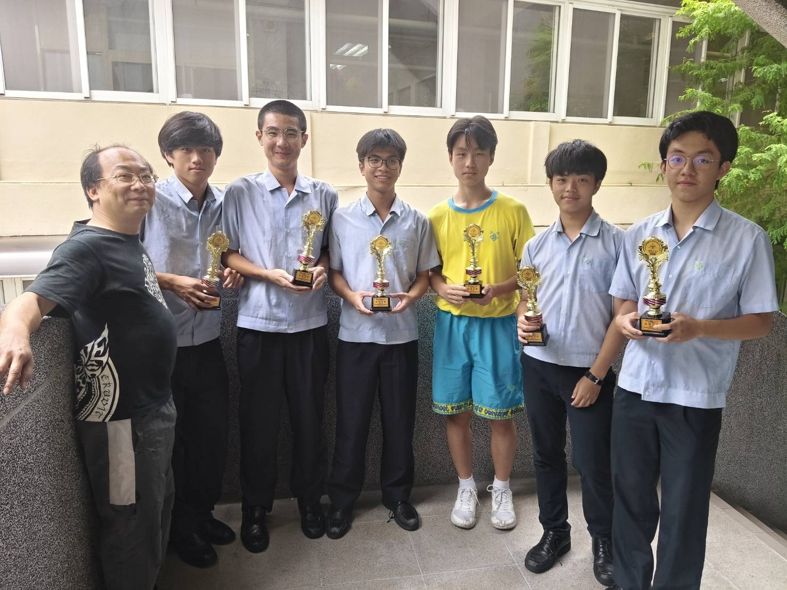

Who I Am
I am someone who learns through exploration, adapts through experience, and grows through challenges. My journey is shaped not only by academics, but also by the way I think, reflect, and respond to the world around me.

Thinking Style
I naturally question how and why things work. Instead of accepting information directly,
I tend to break ideas down, analyze patterns, and rebuild understanding from first principles.
This approach helps me adapt quickly to unfamiliar problems.
Personal Growth
Growth for me has often come from discomfort — moments where I had to adapt, adjust,
or rethink my approach. Over time, I learned that improvement is not linear,
but built through consistent reflection and effort.
Outside School
I enjoy following ideas in technology, science, and real-world innovation.
I like reading and understanding concepts beyond my academic syllabus.
Basketball helps me stay disciplined and mentally resilient.
I enjoy learning skills that are not tied to any single subject.
What Drives Me
I am driven by progress — not perfection. I value steady improvement over time,
especially when it involves challenges that require persistence and patience.
“Consistency, curiosity, and resilience define long-term success.”
